Free CV templates for South Africa
100 CV designs made for South African employers, from the traditional Classic SA layout to modern designs. 22 are ATS-friendly for online applications. Tap one to start your CV with it.
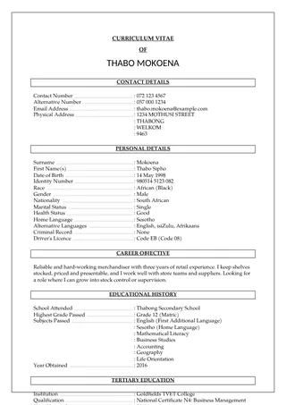
✓ ATSClassic SAUse this template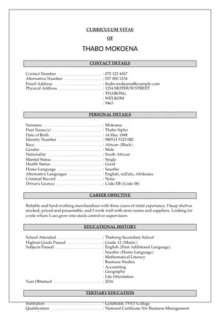
✓ ATSClassic SA ShadedUse this template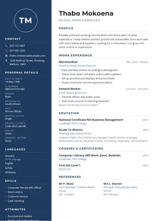
Navy ExecutiveUse this template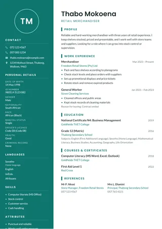
Teal FreshUse this template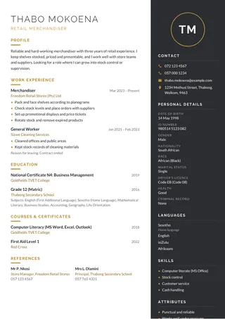
Charcoal & GoldUse this template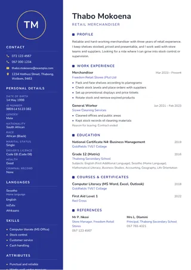
Royal BlueUse this template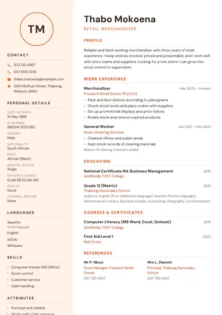
Sunset LightUse this template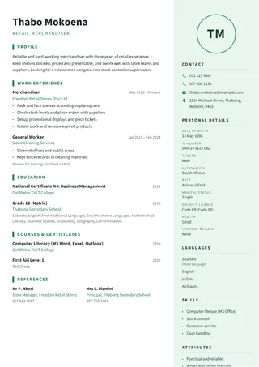
Mint CleanUse this template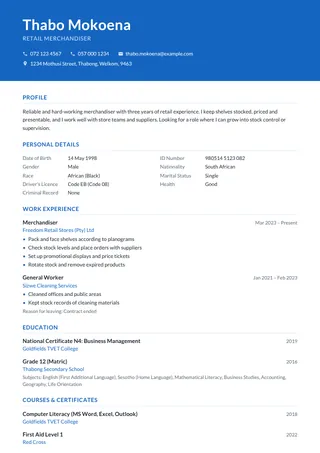
✓ ATSOcean BannerUse this template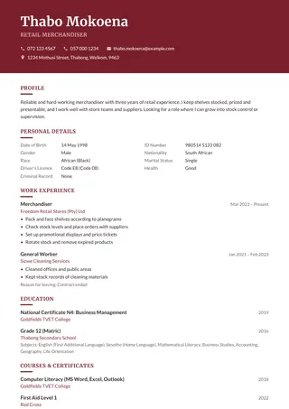
✓ ATSMaroon ClassicUse this template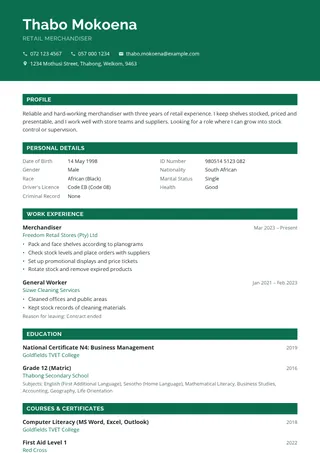
✓ ATSEmeraldUse this template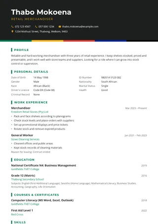
Mzansi PrideUse this template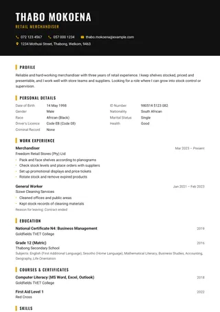
Bold BlackUse this template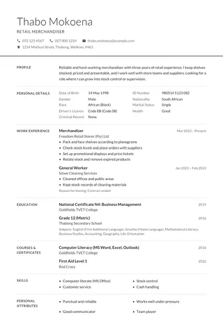
✓ ATSMinimal GreyUse this template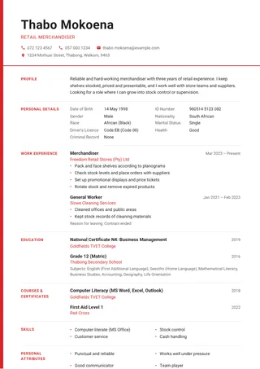
✓ ATSSwiss RedUse this template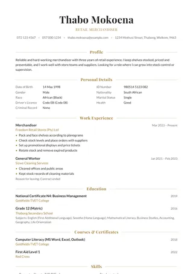
✓ ATSElegant SerifUse this template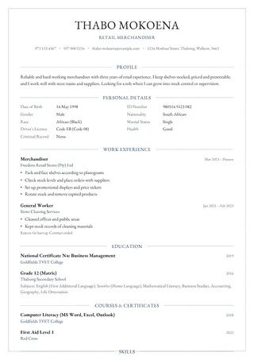
✓ ATSGaramond NavyUse this template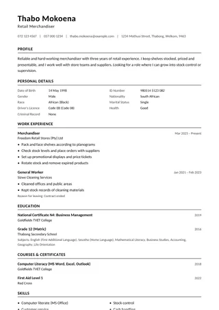
✓ ATSATS SimpleUse this template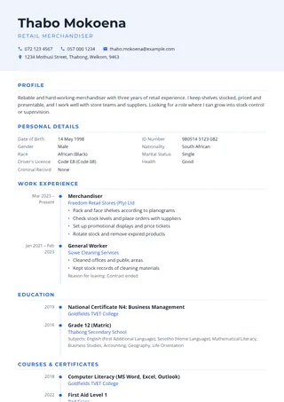
Timeline BlueUse this template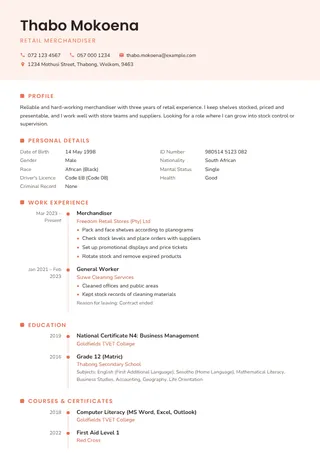
Coral TimelineUse this template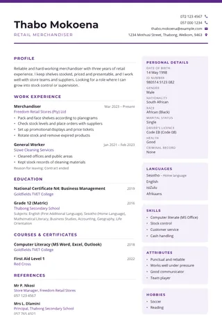
Purple SplitUse this template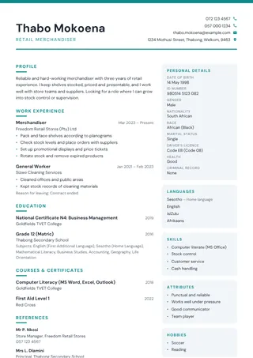
Slate SplitUse this template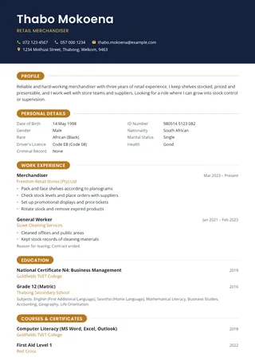
✓ ATSAuroraUse this template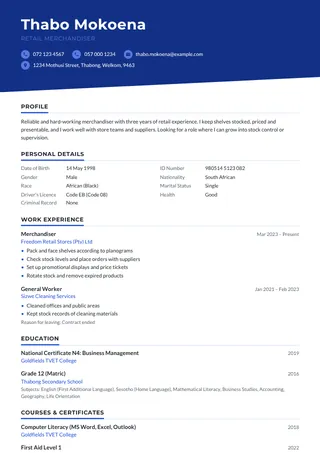
✓ ATSHorizonUse this template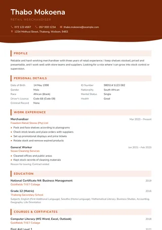
KarooUse this template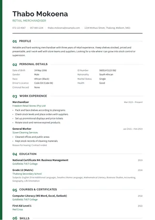
✓ ATSSummitUse this template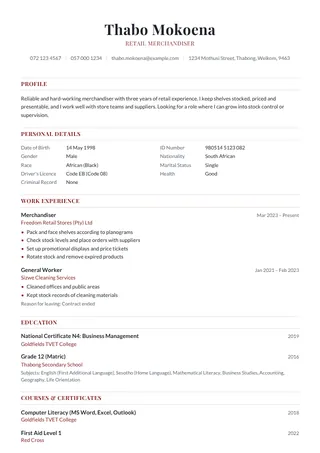
✓ ATSMeridianUse this template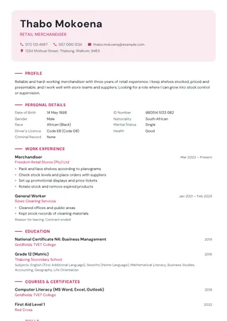
✓ ATSProteaUse this template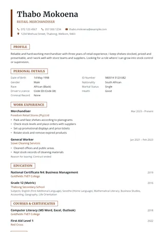
✓ ATSBaobabUse this template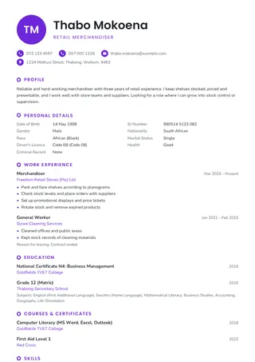
JacarandaUse this template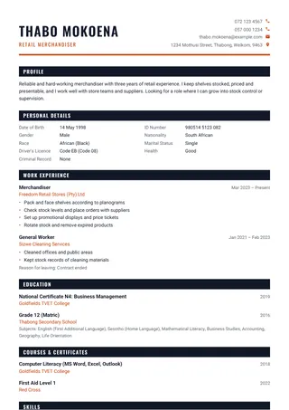
GraphiteUse this template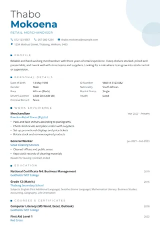
SapphireUse this template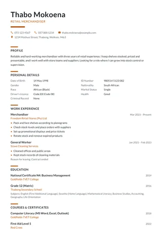
✓ ATSCopperUse this template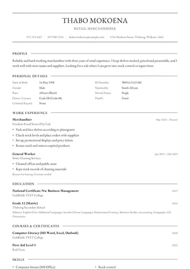
✓ ATSIvoryUse this template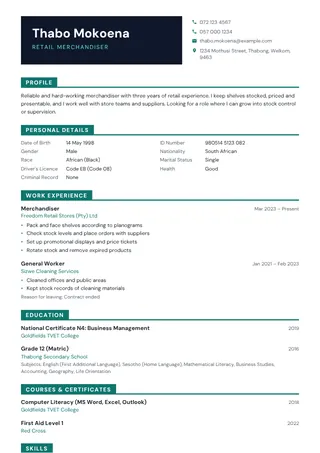
OnyxUse this template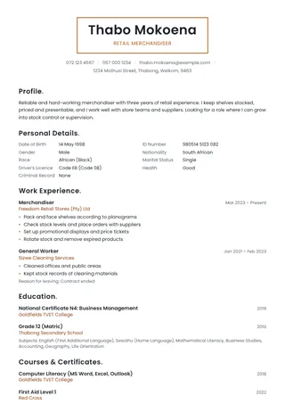
✓ ATSSaffronUse this template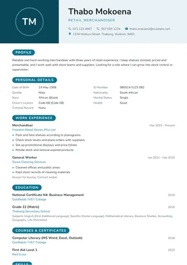
LagoonUse this template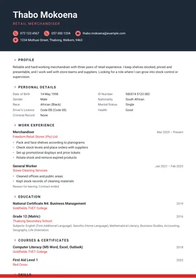
PulseUse this template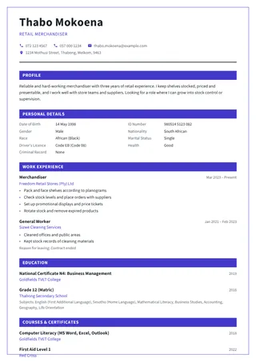
✓ ATSMetroUse this template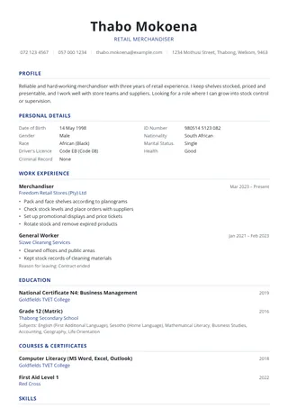
✓ ATSAtlasUse this template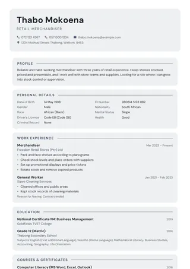
PebbleUse this template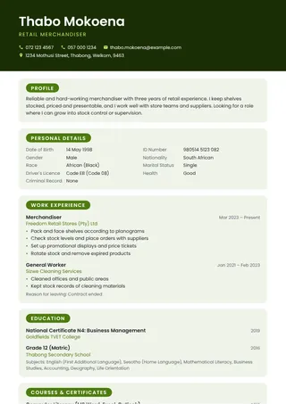
CitrusUse this template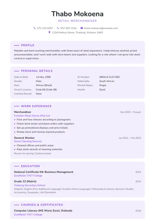
LavenderUse this template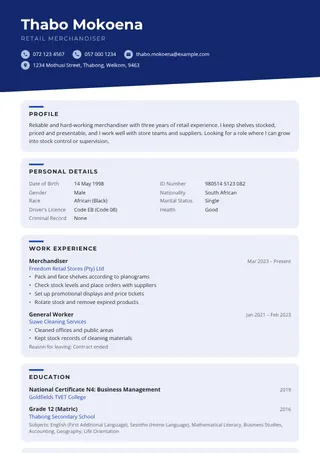
HarbourUse this template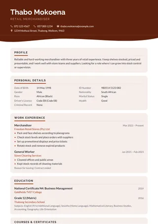
ClayUse this template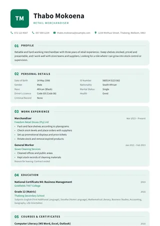
SpearmintUse this template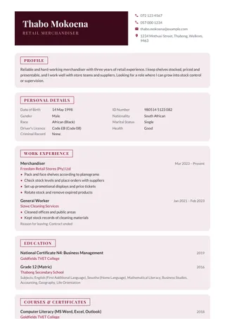
VelvetUse this template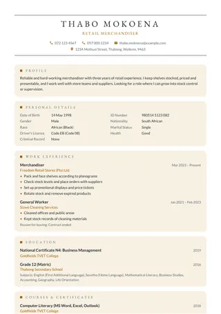
LinenUse this template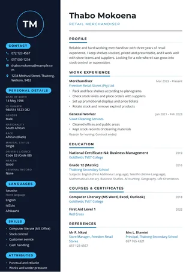
MidnightUse this template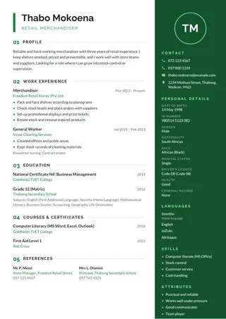
ForestUse this template- PlumUse this template
- SageUse this template
- SteelUse this template
- EmberUse this template
- CobaltUse this template
- ReefUse this template
- RubyUse this template
- GoldfieldsUse this template
- LilacUse this template
- SandstoneUse this template
- CarbonUse this template
- UmhlangaUse this template
- HighveldUse this template
- LowveldUse this template
- KalahariUse this template
- ZambeziUse this template
- LimpopoUse this template
- JoziUse this template
- Cape BreezeUse this template
- VaalUse this template
- KimberleyUse this template
- FynbosUse this template
- SkylineUse this template
- NovaUse this template
- VertexUse this template
- PrismUse this template
- CompassUse this template
- BeaconUse this template
- PearlUse this template
- DuskUse this template
- DawnUse this template
- MonarchUse this template
- MarigoldUse this template
- UrbanUse this template
- ✓ ATSStoneUse this template
- CedarUse this template
- PlatinumUse this template
- MustardUse this template
- OrchidUse this template
- Deep SeaUse this template
- Olive GroveUse this template
- PinstripeUse this template
- MilestoneUse this template
- JourneyUse this template
- PathwayUse this template
- ProgressUse this template
- HeritageUse this template
- RoadmapUse this template
- ChapterUse this template
- MomentumUse this template
Which template should you choose?
- Classic SA: the traditional South African layout with a "Curriculum Vitae of" heading and your personal details first. Many local employers and government departments expect it.
- ATS-friendly (marked ✓ ATS): use one of these when you apply on a company website or job portal. Their computer systems read these templates correctly.
- Modern and colourful: good for private companies, retail, hospitality and creative jobs.
- With photo: only add a photo if it is clear and professional, and leave it out if the advert asks you not to send one.
You can switch templates at any time without typing your CV again, and save it as a PDF or Word file. Need ideas for what to write? See the CV examples for 29 jobs.